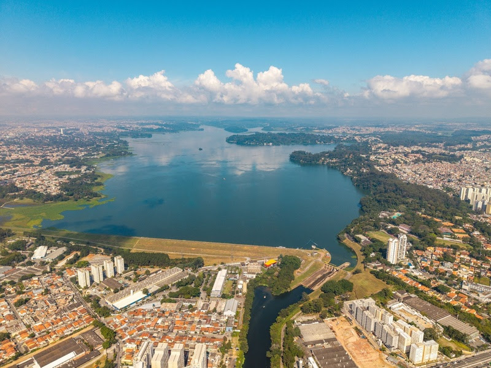

01
Planejamento e coleta
Definição dos pontos de amostragem, registro das condições locais e coleta em recipientes adequados.
Um olhar científico sobre a qualidade da água da Represa de Guarapiranga e sua importância para todos nós.
A Represa de Guarapiranga é um dos principais mananciais de abastecimento de grande parte das zonas Sul e Sudoeste da Grande São Paulo. Suas águas fazem parte do cotidiano de milhões de pessoas, abastecendo residências, comércios e indústrias.
Além desse papel, a represa abriga biodiversidade e espaços de lazer, sendo um importante ponto de contato entre a cidade e a natureza.
Conheça a investigação →
Um percurso de investigação para transformar amostras de água em conhecimento.
Conheça os parâmetros analisadosDefinição dos pontos de amostragem, registro das condições locais e coleta em recipientes adequados.
Medição dos parâmetros relacionados à qualidade da água em laboratório.
Organização dos resultados e comparação com referências compatíveis com a classe e o uso da água.
A análise de parâmetros físicos e químicos ajuda a caracterizar a água da Represa de Guarapiranga e fornece informações importantes para diferentes aspectos da nossa sociedade e do meio ambiente.
Conhecer as condições da água contribui para identificar possíveis riscos e apoiar ações de proteção da população.
A qualidade da água está ligada às condições de vida de organismos aquáticos e ao equilíbrio dos ecossistemas.
A represa também integra a paisagem e oferece espaços de convivência, atividades recreativas e contato com a natureza.
Dados de monitoramento ajudam a acompanhar mudanças ambientais e a embasar estratégias de conservação.
Observe os indicadores e selecione cada um para entender por que ele é importante na avaliação ambiental da represa.
Clique em um parâmetro para saber mais.
Acompanhe os indicadores que ajudam a compreender a qualidade da água da Represa de Guarapiranga.
Selecione um marcador no mapa ou um ponto no menu para consultar os dados registrados.
Os gráficos mostram os valores registrados nos pontos de coleta. A temperatura ainda aguarda medição. A visualização não representa, por si só, uma classificação da qualidade ou potabilidade da água.
Transparência faz parte da ciência. Os valores de pH e condutividade exibidos correspondem aos registros da coleta; os parâmetros ainda não analisados aparecem como pendentes. Estes dados, isoladamente, não determinam a potabilidade da água.
Este projeto integrador, desenvolvido no contexto de Cidades Inteligentes, busca aproximar ciência, tecnologia e participação comunitária para compreender um desafio real: a qualidade da água da Represa de Guarapiranga.
Por meio do monitoramento de parâmetros físico-químicos e de observações ambientais, buscamos transformar dados em conhecimento e incentivar a conscientização sobre a importância dos recursos hídricos.
Curso de Química
Guilherme · Isadora · Jessica · Kaique · Lucas · Samuel
Projeto Integrador · 2026
Espaço reservado para artigos científicos, documentos da CETESB, legislação e demais materiais utilizados no projeto.